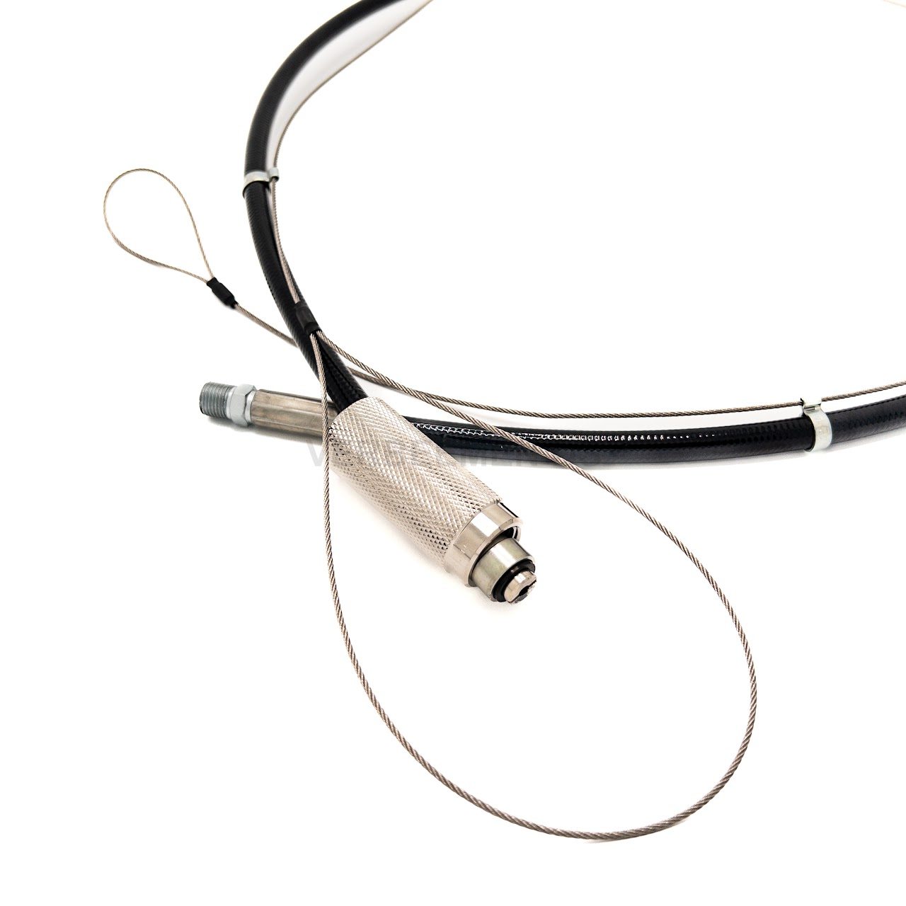

Flexibles assemblés sur mesure avec raccords sertis — toute longueur, toute pression, toute configuration de gaz. La production sur mesure est notre point de départ, et c'est encore ce qui nous distingue auprès des installateurs.

Assemblage sur mesure · raccord d'extrémité
Détermine la compatibilité avec le gaz et la résistance chimique. Le matériau doit convenir au CO2, au N2 ou au mélange de gaz spécifique qui circule dans la ligne.
Le tressage ou le renfort détermine la pression de service et la pression d'éclatement du flexible. Des pressions système plus élevées demandent un renfort plus robuste.
Serti sur mesure selon votre type de raccord. Un raccord mal ajusté ou mal serti est généralement le premier point de défaillance d'une installation — pas le flexible lui-même.
En rouleau ou à la longueur, pour votre propre assemblage ou la revente.
VracAdapté aux applications à l'azote ou au gaz mélangé, avec matériaux appropriés.
N2 / MixLongueur et combinaison de raccords exactes, selon votre plan ou échantillon.
Sur mesureService de raccordement et de sertissage sur assemblages existants ou neufs.
ServiceVérifiez la gaine pour toute fissure ou décoloration, et le raccord pour tout jeu ou corrosion. Remplacez en cas de doute.
Communiquez la pression de service, le type de gaz, la longueur et les raccords souhaités — chaque commande reste ainsi identique à la précédente.
Cela dépend de l'emplacement du flexible dans l'installation : la pression est plus élevée juste après la bouteille qu'après un détendeur secondaire. L'important est que la pression de service du flexible soit largement supérieure à la pression système effective, avec une marge de sécurité suffisante jusqu'à la pression d'éclatement. Indiquez la pression au point d'utilisation dans votre demande.
Il n'existe pas de date de péremption universelle : la durée de vie dépend de la fréquence d'utilisation, des conditions de stockage et des contraintes mécaniques. Une inspection visuelle périodique des fissures, décolorations, dommages à la gaine ou du jeu au niveau du raccord est l'approche pratique. En cas de doute, le remplacement est le choix le plus sûr.
Nous assemblons la longueur et la combinaison de raccords exactes dont votre installation a besoin.